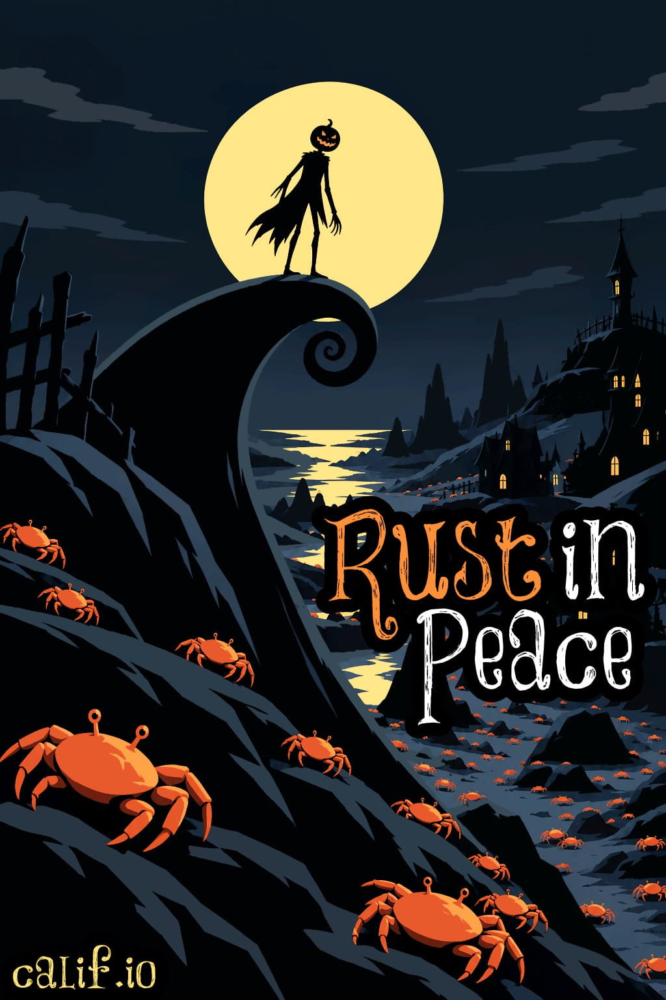
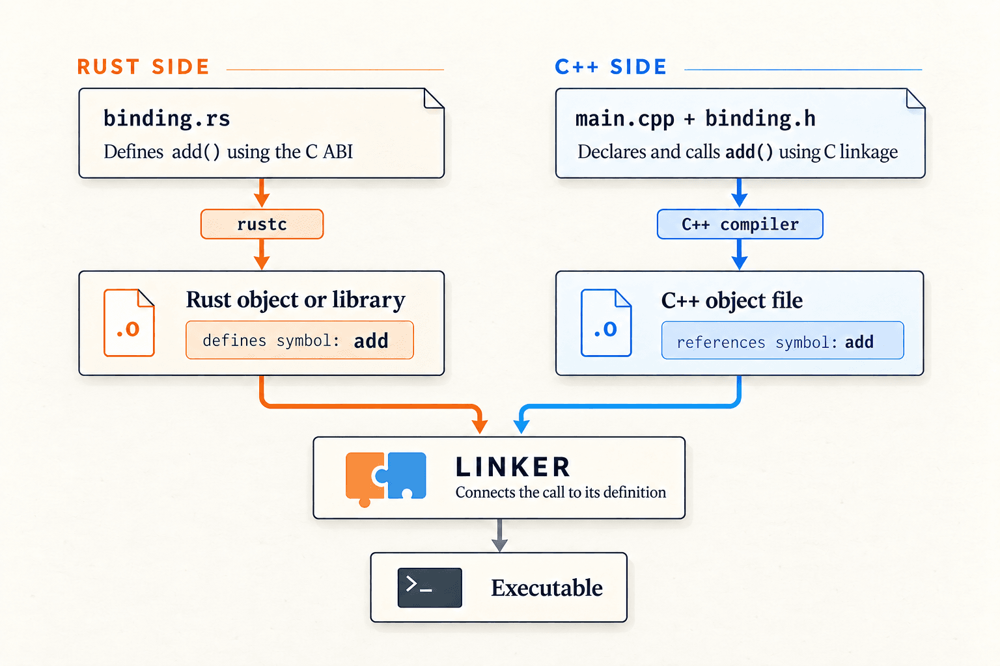
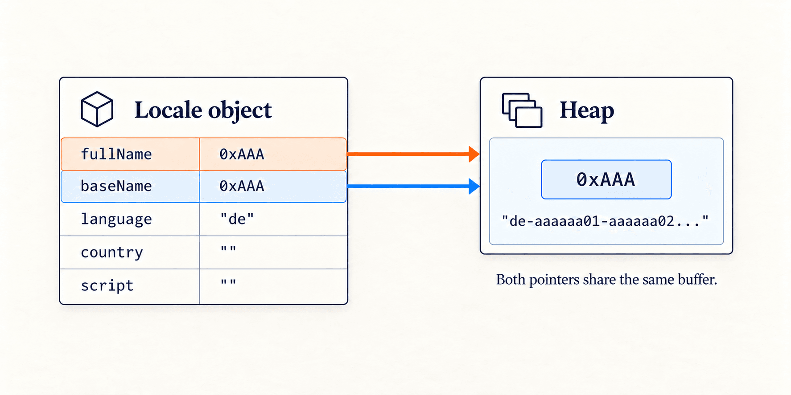
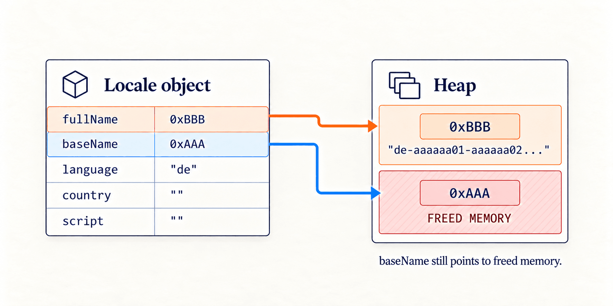

Rust trong bình yên
Bản dịch tiếng Việt của bài gốc Rust in Peace trên Calif — bản quyền thuộc tác giả/Calif. Bài dịch chỉ nhằm mục đích chia sẻ kỹ thuật; mọi quyền đối với nội dung gốc thuộc về Calif.
Thay thế các thành phần C++ dễ bị tổn thương bằng Rust, từng binding một.

At Calif, chúng tôi dành nhiều thời gian nghiên cứu bảo mật tấn công trên phần mềm và phần cứng. Nếu bạn đã theo dõi các bài gần đây của chúng tôi, bạn đã thấy công việc đó trong thực tế. Điều chúng tôi ít nói hơn là cách công việc khai thác (exploitation) giúp chúng tôi hiểu sâu hơn về cách tấn công thành công và biện pháp phòng thủ nào hiệu quả trong việc ngăn chúng. Từ đó, chúng tôi xây dựng chiến lược giúp khách hàng ngăn ngừa và giảm thiểu lỗi bảo mật, hạn chế tác động của exploitation. Công việc phòng thủ bảo mật phần mềm của chúng tôi bao gồm, nhưng không giới hạn ở, các lĩnh vực sau:
- Binding an toàn bộ nhớ (memory-safe bindings)
- Các biện pháp giảm thiểu (mitigations)
- Sandboxing
- Củng cố chuỗi cung ứng bên thứ ba (third-party supply chain hardening)
Bài viết này là phần đầu trong một chuỗi nhằm chia sẻ những gì chúng tôi học được từ công việc đó. Chúng tôi bắt đầu với memory-safe bindings: cách chúng tôi dùng công cụ interop để hỗ trợ chuyển mã C++ sang Rust.
Bối cảnh
Do các vấn đề memory safety trong mã C/C++, nhiều công ty đã cân nhắc viết lại toàn bộ codebase bằng Rust. Tuy nhiên, cách này thường không khả thi, đặc biệt với hệ thống production không thể thay mã quy mô lớn trong một đêm. Một codebase lớn liên tục thay đổi khi developer thêm tính năng và sửa lỗi. Việc viết lại hoàn toàn phải bắt kịp những thay đổi đó đồng thời giữ nguyên hành vi hiện có, khiến nó tốn kém và rủi ro. Cách dễ quản lý hơn là viết lại có chọn lọc các thành phần quan trọng và dễ bị tổn thương bằng Rust, trong khi giữ phần còn lại của ứng dụng bằng C/C++. Điều này đòi hỏi một cách để mã C++ hiện có gọi mã Rust mới.
Binding viết tay có thể đủ với ví dụ nhỏ, nhưng việc bảo trì trở nên phức tạp hơn khi ranh giới mở rộng. C++ và Rust biểu diễn giá trị và quản lý ownership khác nhau. Chúng ta cần công cụ chuyển đổi kiểu qua lại và làm rõ ai sở hữu cũng như ai giải phóng bộ nhớ. Các công cụ interop như cxx, bindgen, Diplomat và Crubit có thể tự động hóa phần lớn công việc này, giảm lượng mã giao diện phải viết, review và bảo trì. Các công cụ này hỗ trợ hướng ngôn ngữ và ánh xạ kiểu khác nhau. Trong bài này, chúng tôi minh họa cách tiếp cận bằng Crubit để sinh binding C++ cho một API Rust nhỏ.
Với một thư viện Rust, Crubit sinh header C++ và mã cầu nối cần thiết để gọi các hàm public của nó. Các kiểu được hỗ trợ được ánh xạ qua ranh giới ngôn ngữ. Tuy nhiên, không phải mọi kiểu Rust hay tính năng ngôn ngữ đều có ánh xạ hỗ trợ; trong những trường hợp đó, một lớp bọc Rust mỏng có thể phơi bày chức năng qua các kiểu và chữ ký hàm mà Crubit hiểu.
C++ gọi Rust như thế nào
Hãy xem một ví dụ đơn giản. Giả sử một crate Rust tên foo cung cấp hàm add. Chúng ta có thể phơi bày nó qua giao diện tương thích C, khai báo giao diện đó trong một header, rồi liên kết thư viện Rust đã biên dịch vào ứng dụng C++.
/// binding.rs
#[unsafe(no_mangle)]
pub extern "C" fn add(a: i32, b: i32) -> i32 {
foo::add(a, b)
}Trình biên dịch Rust đặt hàm đã biên dịch vào một object file. extern "C" chỉ định quy ước gọi C, trong khi #[unsafe(no_mangle)] giữ nguyên tên symbol add để linker tìm được. Sau đó chúng ta khai báo hàm trong một header để trình biên dịch C++ biết cách gọi nó.
// binding.h
#include <stdint.h>
extern "C" int32_t add(int32_t a, int32_t b);Cuối cùng, mã ứng dụng tham chiếu tới nó qua đường dẫn header.
// main.cpp
#include "binding.h"
int main(void) {
add(2, 3);
}Khi biên dịch main.cpp, trình biên dịch C++ đọc binding.h để biết chữ ký hàm add. Trình biên dịch kiểm tra rằng add(2, 3) khớp với khai báo đó. Nó rồi biên dịch mã C++, nhưng phần triển khai thực tế nằm trong object file hoặc thư viện do Rust sinh ra. Linker sau đó tìm symbol tương ứng và kết hợp mã C++ cùng Rust đã biên dịch thành một file thực thi.

Ví dụ với ICU4C
Để thấy cách này hoạt động trong thực tế, hãy dựng một ứng dụng C++ nhỏ nhận một locale và sắp xếp tên theo quy tắc collation của locale đó, dùng thư viện ICU4C phổ biến. Chúng tôi sẽ dựng hai phiên bản. Phiên bản thứ nhất dùng một phiên bản cũ của ICU4C chứa lỗ hổng bảo mật use-after-free (CVE-2021-30535). Phiên bản thứ hai dùng ICU4X, một triển khai Rust của ICU4C, với binding Crubit. Nguyên nhân gốc của UAF không phải trọng tâm thảo luận ở đây, nhưng bạn có thể đọc phần giải thích trong Giải thích CVE-2021-30535. Mã nguồn của ứng dụng nằm ở đây.
Khi chạy ICU4C, AddressSanitizer bắt được lần đọc không hợp lệ và báo cáo UAF như bên dưới.
% ./build/icu4c-demo --cve
=================================================================
==40228==ERROR: AddressSanitizer: heap-use-after-free on address 0x60f000000220 at pc 0x00010287671c bp 0x00016f9f5a90 sp 0x00016f9f5260
READ of size 2 at 0x60f000000220 thread T0
#0 0x000102876718 in strlen+0x22c (libclang_rt.asan_osx_dynamic.dylib:arm64e+0x16718)
#1 0x0001004dd988 in uprv_strdup_66+0x10 (icu4c-demo:arm64+0x1000d5988)
#2 0x0001004a9950 in icu_66::Locale::operator=(icu_66::Locale const&)+0x1d0 (icu4c-demo:arm64+0x1000a1950)
#3 0x0001004a9be4 in icu_66::Locale::Locale(icu_66::Locale const&)+0x64 (icu4c-demo:arm64+0x1000a1be4)
#4 0x000100420328 in icu_66::CollationLoader::getCacheEntry(UErrorCode&)+0x104 (icu4c-demo:arm64+0x100018328)
#5 0x0001004200b8 in icu_66::CollationLoader::loadTailoring(icu_66::Locale const&, UErrorCode&)+0x194 (icu4c-demo:arm64+0x1000180b8)
#6 0x000100415c90 in icu_66::Collator::makeInstance(icu_66::Locale const&, UErrorCode&)+0x24 (icu4c-demo:arm64+0x10000dc90)
#7 0x00010041603c in icu_66::Collator::createInstance(icu_66::Locale const&, UErrorCode&)+0x28c (icu4c-demo:arm64+0x10000e03c)
#8 0x0001004096b8 in main main.cc:20
#9 0x0001849cc4e0 in start+0x1b4c (dyld:arm64e+0x204e0)ICU4X tránh lỗi ownership cụ thể này bằng một cách biểu diễn khác. Kiểu Locale của nó lưu language identifier và các extension dưới dạng các trường có cấu trúc, được sở hữu. Nó không duy trì cặp con trỏ chuỗi đồng bộ thủ công như ICU4C. Do đó, phiên bản thứ hai chạy mà không bị crash,
% ./build/icu4x-demo --cve
Andersson
Meyer
Mueller
Müller
Özil
ZimmermannDùng Crubit để dựng cầu nối
Hãy xem chúng tôi đã dựng lại ứng dụng C++ với ICU4X bằng Crubit như thế nào.
Vì ứng dụng của chúng tôi viết bằng C++, để dùng ICU4X cần một giao diện interop C++/Rust. Chúng ta có thể tự viết giao diện đó hoặc sinh nó bằng Crubit. Cách thủ công bắt đầu với một giao diện tương thích C phơi bày một opaque handle và ba thao tác:
typedef struct ManualCollatorHandle ManualCollatorHandle;
uint8_t manual_collator_create(
const uint8_t* locale, size_t len,
ManualCollatorHandle** out);
int32_t manual_collator_compare(
const ManualCollatorHandle* collator,
const uint8_t* left, size_t left_len,
const uint8_t* right, size_t right_len);
void manual_collator_destroy(ManualCollatorHandle* collator);Phần triển khai Rust chuyển các cặp pointer-and-length đầu vào thành slice:
unsafe fn bytes<'a>(data: *const u8, len: usize) -> &'a [u8] {
if len == 0 {
&[]
} else {
unsafe { slice::from_raw_parts(data, len) }
}
}Sau đó nó gọi ICU4X để tạo collator và so sánh chuỗi:
#[unsafe(no_mangle)]
pub unsafe extern "C" fn manual_collator_create(
locale: *const u8,
len: usize,
out: *mut *mut Collator,
) -> u8 {
// SAFETY: The caller supplies a valid output slot and readable locale.
unsafe { *out = ptr::null_mut() };
match Collator::new(unsafe { bytes(locale, len) }) {
Ok(collator) => {
unsafe { *out = Box::into_raw(Box::new(collator)) };
0
}
Err(code) => code,
}
}
#[unsafe(no_mangle)]
pub unsafe extern "C" fn manual_collator_compare(
collator: *const Collator,
left: *const u8,
left_len: usize,
right: *const u8,
right_len: usize,
) -> i32 {
unsafe { (&*collator).compare_utf8(bytes(left, left_len), bytes(right, right_len)) }
}Handle trả về từ hàm manual_collator_create cuối cùng phải được truyền cho hàm destroy để giải phóng đối tượng Rust:
#[unsafe(no_mangle)]
pub unsafe extern "C" fn manual_collator_destroy(collator: *mut Collator) {
if !collator.is_null() {
unsafe { drop(Box::from_raw(collator)) };
}
}Phía C++ vẫn cần một owner tự động giải phóng handle, ngăn copy vô tình, và xử lý lỗi constructor. Nếu bạn nghĩ đây là nhiều việc thủ công chỉ cho ba hàm, đúng vậy. Và nó chỉ càng phức tạp, càng cồng kềnh khi bạn muốn hỗ trợ thêm kiểu/hàm. Ví dụ đầy đủ của chúng tôi cho thấy cầu nối Rust, header C và owner C++.
Hãy xem Crubit tự động hóa quy trình như thế nào. Lần thử đầu tiên sinh binding cho toàn bộ API collator của ICU4X tạo ra một header C++ không biên dịch được vì alias trait ZeroFrom chưa được hỗ trợ. Để vượt qua hạn chế này, chúng tôi định nghĩa một struct Rust Collator nhỏ giữ đối tượng ICU4X ở private và chỉ phơi bày các thao tác mà ứng dụng cần:
pub struct Collator {
inner: CollatorBorrowed<'static>,
}
impl Collator {
pub fn new(locale: &[u8]) -> Result<Self, u8> {
let locale = Locale::try_from_utf8(locale).map_err(|_| 1u8)?;
let inner = CollatorBorrowed::try_new(locale.into(), Default::default())
.map_err(|_| 2u8)?;
Ok(Self { inner })
}
pub fn compare_utf8(&self, left: &[u8], right: &[u8]) -> i32 {
match self.inner.compare_utf8(left, right) {
std::cmp::Ordering::Less => -1,
std::cmp::Ordering::Equal => 0,
std::cmp::Ordering::Greater => 1,
}
}
}Với API Rust đã sẵn sàng, chúng ta có thể nối nó vào build CMake qua Corrosion. Corrosion quản lý các target Cargo trong một dự án CMake. Sau khi chuẩn bị các dependency đã pin, chúng tôi bật Crubit cho crate locale_collator và liên kết thư viện kết quả vào ứng dụng:
include(FetchContent)
FetchContent_Declare(Crubit SOURCE_DIR "${CRUBIT_SOURCE}")
FetchContent_Declare(Corrosion SOURCE_DIR "${CORROSION_SOURCE}")
FetchContent_MakeAvailable(Corrosion)
# Generate C++ bindings for the Rust crate.
corrosion_experimental_crubit(locale_collator)
corrosion_import_crate(MANIFEST_PATH rust/Cargo.toml LOCKED)
get_target_property(
support_targets crubit_support INTERFACE_LINK_LIBRARIES)
add_dependencies(crubit_support ${support_targets})
# Expose the Rust library and Crubit's support code to C++.
add_library(collation INTERFACE)
target_include_directories(
collation INTERFACE "${CMAKE_CURRENT_SOURCE_DIR}")
target_link_libraries(
collation INTERFACE locale_collator crubit_support)
add_dependencies(collation crubit_support)
add_executable(icu4x-demo main.cc contacts.cc)
target_link_libraries(icu4x-demo PRIVATE collation)Hai dòng then chốt là corrosion_experimental_crubit(), bật sinh binding, và corrosion_import_crate(), thêm crate Rust vào build. Khi chạy cmake --build build, Corrosion gọi Crubit để sinh header C++ và mã cầu nối Rust, rồi build thư viện Rust. Và voilà! Ứng dụng C++ giờ có thể dùng giao diện được sinh để tạo collator và sắp xếp đầu vào:
#include "collation.h"
#include "contacts.h"
#include <algorithm>
#include <exception>
#include <iostream>
#include <stdexcept>
int main(int argc, char** argv) {
try {
auto request = contacts::ParseArguments(
argc, argv, "ICU4X 2.3.1 through Crubit");
if (request.done) return 0;
const auto locale = contacts::ToLanguageTag(request.locale);
auto result = collation::Collator::new_(locale);
if (!result.has_value())
throw std::runtime_error("Invalid or unsupported locale");
const auto& collator = result.value();
std::stable_sort(request.names.begin(), request.names.end(),
[&](const auto& left, const auto& right) {
return collator.compare_utf8(left, right) < 0;
});
contacts::Print(request.names);
return 0;
} catch (const std::exception& error) {
std::cerr << "error: " << error.what() << '\n';
return 1;
}
}Hiểu ranh giới an toàn
Crubit giúp chúng ta khỏi phải viết phần lớn boilerplate để nối C++ với Rust. Nếu nhìn vào mã được sinh, bạn sẽ thấy nó dùng Rust unsafe. Từ khóa unsafe trong Rust nghĩa là caller phải tuân theo một số quy tắc, chẳng hạn giữ bộ nhớ được mượn còn sống và không đổi trong lúc Rust dùng nó. Crubit không thể làm toàn bộ ứng dụng C++ an toàn bộ nhớ, và sai sót ở một trong hai phía ranh giới vẫn có thể gây lỗi.
Ngoài rủi ro vốn có khi trộn mã memory-safe với memory-unsafe, bản thân cầu nối cũng có thể đưa vào lỗi memory-safety. Ví dụ, giao diện C++ của Crubit cho vector Rust vẫn còn lỗi có thể gây ghi ngoài biên và use-after-free. Những vấn đề này cho thấy binding được sinh và mã hỗ trợ của chúng cũng cần được review và kiểm thử cẩn thận. Một số cuộc di chuyển cần còn ít công việc tích hợp hơn. Trong một bài blog sau, chúng tôi sẽ chỉ cách C FFI của rust-brotli cho phép dùng nó như thay thế drop-in trong khi giữ nguyên caller. Tái sử dụng giao diện đó giảm overhead và cơ hội lỗi tích hợp mới, dù FFI hiện có vẫn cần được chỉnh sửa.
Dù vậy, việc thay thế từng phần mã C++ rủi ro cao bằng Rust vẫn mang lại lợi ích bảo mật rõ ràng. Trong demo của chúng tôi, cải thiện an toàn chính đến từ việc thay mã dễ tổn thương của ICU4C bằng ICU4X. API Rust nhỏ của chúng tôi cấm mã unsafe và không giữ tham chiếu tới chuỗi đầu vào sau mỗi lần gọi. Crubit rồi xử lý phần lớn công việc nối API đó với C++, giảm lượng mã chúng tôi phải viết và review.
Chi phí hiệu năng
Một cân nhắc thực tế khác với người duy trì codebase lớn là liệu Crubit có thêm overhead hiệu năng cho ứng dụng hay không. Để đo chi phí lớp binding, chúng tôi so sánh cùng một adapter ICU4X được gọi trực tiếp từ Rust và qua Crubit từ C++. Cả hai đường dùng cùng collator và các cặp đầu vào giống hệt. Đường Crubit chậm hơn khoảng 1,0–2,4%, thêm khoảng 0,5–1,3 ns mỗi lần so sánh. Các kết quả này gợi ý rằng gọi thành phần Rust qua Crubit có chi phí hiệu năng nhỏ — một đánh đổi hợp lý cho lợi ích an toàn khi thay thế triển khai dễ tổn thương.
Kết luận
Làm cho một ứng dụng C++ an toàn hơn không đòi hỏi viết lại toàn bộ bằng Rust. Bằng cách thay thế dần các thành phần dễ mắc lỗi memory-safety, chúng ta hưởng lợi từ hệ thống kiểu và mô hình ownership của Rust trong khi giữ phần còn lại của ứng dụng. Các công cụ tương thích như Crubit khiến cách tiếp cận này khả thi, giúp củng cố phòng thủ trước exploitation với chỉ một chi phí hiệu năng nhỏ. Memory safety chỉ là một phần của phòng thủ rộng hơn, vì vậy hãy theo dõi các bài sắp tới khi chúng tôi khám phá các kỹ thuật khiến lỗ hổng còn lại khó khai thác hơn và hạn chế thiệt hại khi attacker vượt qua được.
Phụ lục
Giải thích CVE-2021-30535
Triển khai ICU4C dễ tổn thương lưu tên đầy đủ và tên không có keyword của locale trong fullName và baseName. Khi không có keyword, cả hai trỏ tới cùng một buffer như Hình 1 bên dưới.

Hai con trỏ chuỗi chia sẻ cùng một heap buffer
Trong lúc dựng collator, CollationLoader tạo một locale không có keyword rồi khôi phục thiết lập collation của người dùng. Base name dài của chúng tôi khiến việc thêm collation=phonebook đòi hỏi buffer lớn hơn.
Trong Locale::setKeywordValue(), dòng 1360 giải phóng buffer cũ, và dòng 1362 cập nhật fullName, để baseName bị dangling. Vì các con trỏ không còn khớp, ICU4C bỏ qua việc dựng lại base name. Một lần copy sau đó đọc bộ nhớ đã giải phóng, và lúc hủy có thể giải phóng lần nữa như Hình 2 bên dưới.

Con trỏ baseName bị dangling sau khi tái cấp phát